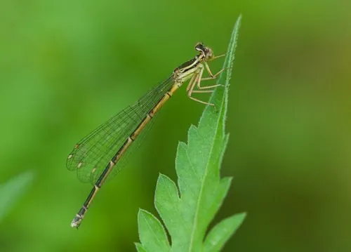

昆虫 · 动物界
白扇蟌 Platycnemis foliacea

雄虫中足和胫节膨大呈白色扇状的豆娘，常在水草丰茂的溪流和沟渠边活动，是东亚水边常见的蟌类之一。
- 分类
- 门节肢动物门纲昆虫纲目蜻蜓目科扇蟌科属扇蟌属
- 栖息环境
- 溪流、沟渠、池塘和水田边，成虫常停在水草和灌木叶上
- 地理分布
- 中国、日本和朝鲜半岛
- 保护级别
- 暂无评估
物种志
白扇蟌成虫体长 30–35 mm，翅展 40–50 mm。雄虫的中足和胫节膨大呈白色扇状，这是它得名的原因，也是辨认雄虫的关键特征；体色黄褐或灰白，翅膀透明，停息时竖立在背上。
白扇蟌分布于中国、日本和朝鲜半岛，栖息于溪流、沟渠、池塘和水田边。成虫常停在水草和灌木叶上，捕食小型昆虫；繁殖期雄虫在水边追逐雌虫，雌虫在水生植物上产卵。稚虫水生，生活在缓流水草中，捕食水中小型动物。豆娘和蜻蜓是近亲，但豆娘停息时翅膀多竖立在背上，体型也更纤细。白扇蟌在东亚的水边十分常见，是观察豆娘行为的好对象。目前它没有IUCN 的正式评估，中国未将其列入国家重点保护野生动物名录。
形态与习性
- 食性成虫捕食小型昆虫，稚虫捕食水生小动物
- 体长30–35 mm，翅展 40–50 mm
- 中足特征雄虫中足和胫节膨大呈白色扇状
- 栖息地溪流、沟渠、池塘和水田边
- 繁殖雄虫在水边追逐雌虫，雌虫在水生植物上产卵
- 稚虫水生，生活在缓流水草中
趣味知识
- 白扇蟌的雄虫中足膨大呈白色扇状，是它最显眼的特征。
- 它常停在水草叶尖，翅膀竖立，姿态轻盈。
- 豆娘和蜻蜓是近亲，但豆娘停息时翅膀多竖立在背上。